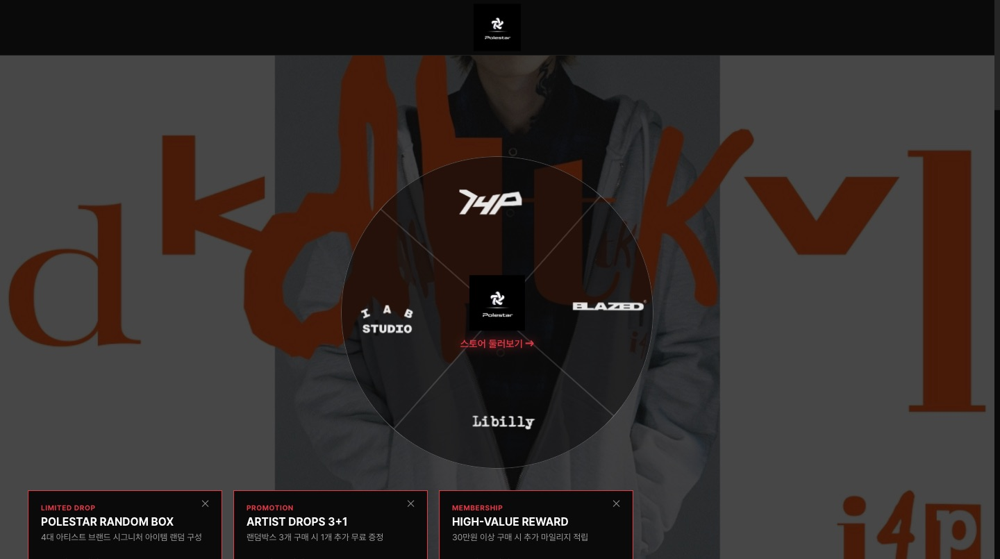
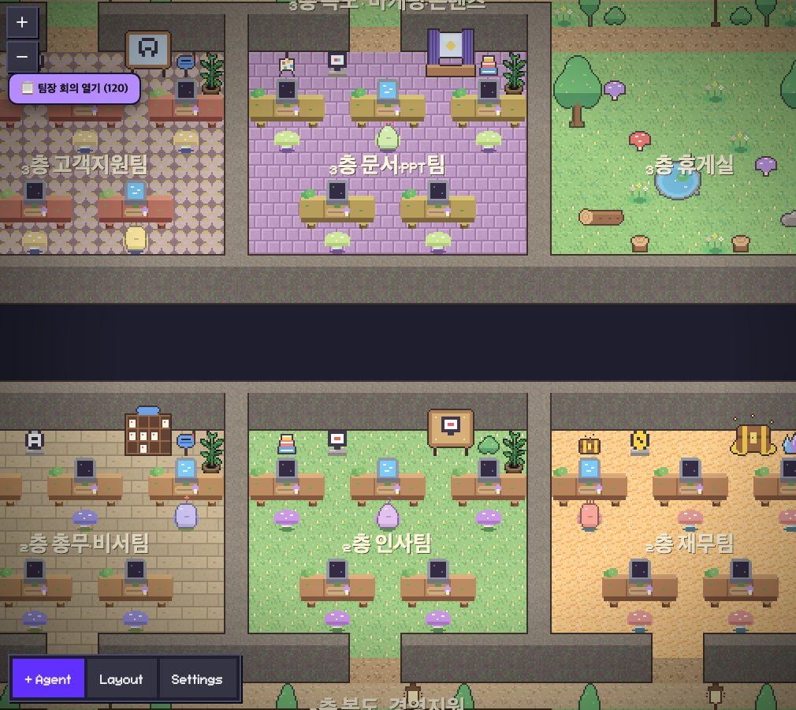

뽑왕(BBOB KING)

요즘 유행하는 쿠지 뽑기를 온라인 사이트 개념으로 풀어 본 아이디어 포트폴리오 작품입니다. Figma로 화면을 구성했습니다.
공연 현장에서 익힌 기획·운영 경험을 AI 자동화와 콘텐츠 제작으로 넓혀 온 사람입니다.
AI와 자동화 시스템으로 완성하는 신속, 정확한 업무 마스터
Figma로 설계한 서비스 화면, Claude로 제작한 영상과 웹사이트, 반복 업무를 줄이는 자동화까지 직접 기획하고 구축한 작업을 분야별로 정리했습니다.
요즘 유행하는 쿠지 뽑기를 온라인 사이트 개념으로 풀어 본 아이디어 포트폴리오 작품입니다. Figma로 화면을 구성했습니다.

일상 속 심부름과 배달을 '퀘스트'라는 게임 같은 개념으로 해석하고, 여기에 라이브 방송을 더한 앱 아이디어입니다.

Steam 한국 주간 판매 차트 TOP6를 표지, 순위 카드 6장, 요약 카드 1장으로 정리한 8장짜리 카드뉴스입니다. Figma로 제작했습니다.
참고 영상의 편집점과 분위기를 Claude에 설명해 컷 편집 영상을 제작했고, 모션그래픽도 프롬프트만으로 구현했습니다.

한국 K-HIPHOP 아티스트들이 만든 의류 브랜드를 한곳에 모은 편집샵 콘셉트의 포트폴리오 사이트입니다. Claude만으로 제작했습니다.
아기 강아지 담이의 일상을 짧은 숏츠 형식으로 엮은 컷 편집 영상입니다. 편집점과 분위기를 프롬프트로 설명해 만들었습니다.
창모의 「UGRS(UnderGround Rock Star!)」 노래에 맞춰 글자가 움직이는 30초 타이포그래픽 영상입니다.
노션을 연결해 그날의 일정을 자동으로 정리해 브리핑해 주는 자동화입니다.
메일을 연동해 중요한 메일을 미리 받아 두고, 내용을 파악해 답장 임시저장까지 자동으로 진행합니다.
영상 대본과 유튜브 대본 등 글을 주제에 맞춰 만들어 주는 자동화입니다.
주제를 정하면 블로그 글 초안을 써 주는 자동화입니다.

팀장 20명과 운영자가 협업하고 회의하고, 쉬는 시간에는 리뷰까지 하는 AI 오피스를 직접 만들어 쓰고 있습니다.
공연 현장 크루로 무대 설치, 아티스트 케어, 무대 진행, 철수까지 무대 뒤의 모든 과정을 맡았습니다. 무전기가 먹통이던 현장에서는 큐시트와 리허설로 타이밍을 기억해 두었다가 직접 신호를 주어 공연이 어긋나지 않게 했습니다.
자세히 보기 →2024.06~2026.06윤소그룹 기획팀에서 공연 기획, 티켓 상품 마케팅·홍보, 공연장 운영, 관객 CS, 현장 정산까지 공연이 만들어지는 전 과정을 한 팀에서 이어서 맡았습니다. 기획부터 정산까지 흐름 전체를 볼 수 있다는 것이 강점입니다.
자세히 보기 →2026AI 비서 「클식이」, 카드뉴스·PPT·릴스 제작 명령어, 대본 자동화, 8비트 AI 에이전트 오피스, 그리고 이 홈페이지까지 AI로 직접 만들었습니다. 반복되는 업무는 자동화하고 콘텐츠는 AI와 함께 빠르게 완성합니다.
자세히 보기 →SBS아카데미 홍대의 AI 과정에서 Claude·Figma·Manus 등 AI 도구를 배우고, 뽑왕·Quest World·카드뉴스·영상 등 다양한 결과물을 직접 만들었습니다.
이메일 브리핑, 캘린더 관리, 데일리 브리핑, 영수증 정리, 지하철 알림처럼 매일 반복되는 일을 AI 비서 「클식이」와 스크립트로 자동화해 직접 쓰고 있습니다.
팀장 20명과 운영자가 협업하고 회의하고, 쉬는 시간에는 서로의 작업물을 리뷰하는 8비트 AI 오피스를 직접 만들어 지금도 사용하고 있습니다.
공연 기획을 시작으로 티켓 상품 마케팅·홍보, 공연장 운영과 오퍼레이터, 관객 안내·CS, 공연장 내 현장 정산까지 공연이 만들어지는 전 과정을 한 팀에서 이어서 맡았습니다(2년 1개월).
영상 편집·이미지 교육 과정에서 프리미어·애프터이펙트로 영상을 편집하고, 포토샵으로 이미지를 합성·보정하는 방법을 배웠습니다.
2022년 2월부터 4년 5개월째 음악 제작 유튜브 채널을 운영하고 있습니다. 직접 만든 곡을 꾸준히 올리고, 취업 과정을 이야기로 풀어 낸 8곡짜리 믹스테잎도 만들었습니다.
「라이브릿지」의 기획과 영업을 맡아 약 50여 곳의 업체를 가입시키고, 방송을 매달 5번 이상 진행했습니다. 패키지 상품을 새로 개발해 1건을 계약했고 2건은 계약 대기 단계였습니다(5개월).
뮤지컬 「여명의 눈동자」의 프리 롤 기간에 무대 진행 스태프로 참여해, 본 공연 전 준비 단계의 무대 진행을 맡았습니다.
「서울 시향」 공연에서 무대 진행 스태프로 일했고, 촬영 중 전선 사고를 미리 막은 일이 있었습니다(사례 페이지).
유튜브 라이브로 진행된 경연 「하고싶은 말을 해라」에서 무대 진행 스태프로 일했습니다. 무전기가 되지 않는 상황에서도 큐시트와 리허설로 타이밍을 맞춰 현장을 이어 갔습니다.
헤이지니 뮤지컬의 무대 팀 크루 스태프로 2년 8개월 동안 일했습니다. 무대 설치부터 아티스트 케어, 공연 중 무대 진행, 공연 뒤 철수까지 무대 뒤의 흐름을 처음부터 끝까지 맡았습니다.
공연 홍보 포스터를 직접 제작하고 현장 진행까지 맡았던 공연 9건을 정리했습니다. 포스터를 누르면 크게 볼 수 있으며, 공연 소개에서 공연별 역할과 진행 시기를 확인하실 수 있습니다.
개인 음악 채널 Polestar에서 직접 작사·작업해 발표한 대표곡 4곡입니다. 이별의 후회, 연애의 설렘, 짝사랑의 고백, 랩 실력을 드러내는 곡까지 서로 다른 감정과 이야기를 담았으며, 곡마다 분위기와 만든 배경을 함께 적었습니다. 썸네일에 마우스를 올리면 음소거 미리보기로 재생되고, 누르면 소리와 함께 곡 전체를 들으실 수 있습니다.
유지경성 (Prod. St4ndard)
이별 뒤에 찾아온 후회를 담은 감성 힙합입니다. 지금 말하기엔 늦었지만 "넌 내 사랑이었다"고 전하는 늦은 고백이 곡의 중심 이야기입니다.
유지경성 (Prod. NO!S)
연애를 공부하듯 자신 있게 다가가는 마음을 재치 있게 풀어낸 곡입니다. 밝고 당당한 분위기에 장난스러운 어투를 더했습니다.
승재 (Prod. The Sky Beats)
랩 모드를 켜고 실력을 선언하는 힙합 곡입니다. 자신감 있는 래핑으로 곡의 에너지를 끌어올리는 데 집중했습니다.
유지경성 (Prod. Guard) · 2024.03 업로드
짝사랑에 빠진 남자의 설레는 마음과 조심스러운 고백을 노래했습니다. 직접 겪었던 짝사랑의 기억을 바탕으로 만들었습니다.
안부나 제안을 남겨 주시면 확인하겠습니다. 이름(별명)과 내용만 접수합니다.
지금까지 남겨진 방명록 0개
가장 최신 방명록이 위에 보여요 · 한 페이지에 10개씩
방문자 화면에는 내용이 보이지 않아요.
요청서를 남겨 주시면 확인 후 메일로 직접 전달해 드리겠습니다.
전화나 이메일로 연락 주시면 확인 후 답변드리겠습니다.
혼자는 완벽하지 않지만, 함께하면 완벽해질 수 있다